Sejarah HDD
Ukuran hard disk dari masa ke masa
- Isi
- Enam HDD yang dibuka. Diameter piringannya 8", 5,25", 3,5", 2,5", 1,8", dan 1".
- Pelajaran
- Hari ini yang masih dipakai hanya 3,5" (PC/server) dan 2,5" (laptop/eksternal).
Semua colokan dan jenis penyimpanan yang akan kamu temui saat menjual, menyewakan, atau memperbaiki komputer. Setiap kartu memakai foto barang asli.
Penyimpanan adalah tempat file disimpan permanen. Tidak semua SSD berbentuk NVMe, dan hard disk laptop berbeda dengan hard disk PC. Bentuk fisik menentukan bisa dipasang di mana, sedangkan jenis jalurnya menentukan seberapa cepat.
| Jenis | Bentuk | Kecepatan baca | Dipakai di | Kisaran 1 TB |
|---|---|---|---|---|
| HDD 3,5" | Kotak logam 10 × 14,7 cm, piringan berputar | ±150–250 MB/s | PC desktop, NAS, CCTV | Rp0,8–1,2 jt |
| HDD 2,5" | Lebih kecil, tebal 7 atau 9,5 mm | ±100–140 MB/s | Laptop lama, HDD eksternal | Rp0,7–1 jt |
| SSD SATA 2,5" | Sama persis dengan HDD laptop, tapi tanpa bagian bergerak | ±550 MB/s | Upgrade PC dan laptop lama | Rp1,5–2,2 jt |
| M.2 SATA | Keping M.2, biasanya 2 lekukan (B+M key) | ±550 MB/s | Laptop 2015–2019 | jarang dijual baru |
| M.2 NVMe | Keping M.2, biasanya 1 lekukan (M key) | ±3.500–14.000 MB/s | Semua PC dan laptop baru | Rp2,5–3,5 jt |
| mSATA | Kartu kecil generasi lama | ±550 MB/s | Laptop 2011–2015 | stok lama |
| eMMC / UFS | Chip yang disolder ke papan | ±250–1.000 MB/s | Laptop murah, tablet | tidak bisa diganti |
Harga 1 TB adalah perkiraan November 2026 saat harga memori sedang tinggi.
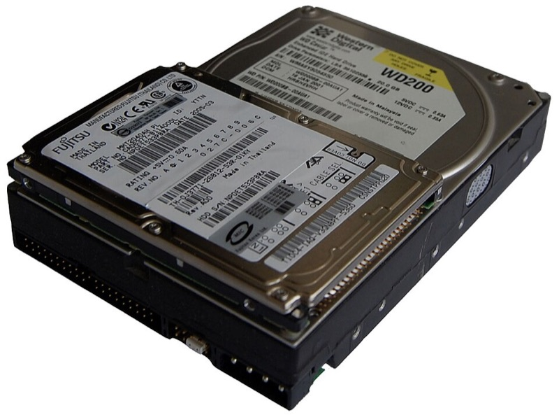
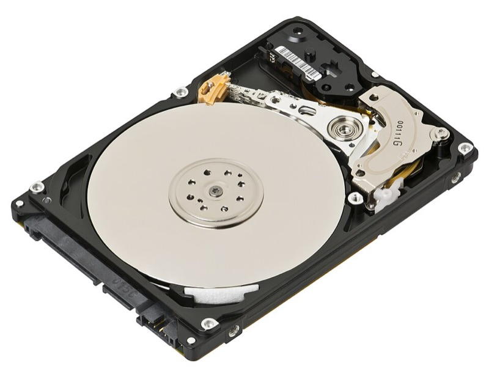


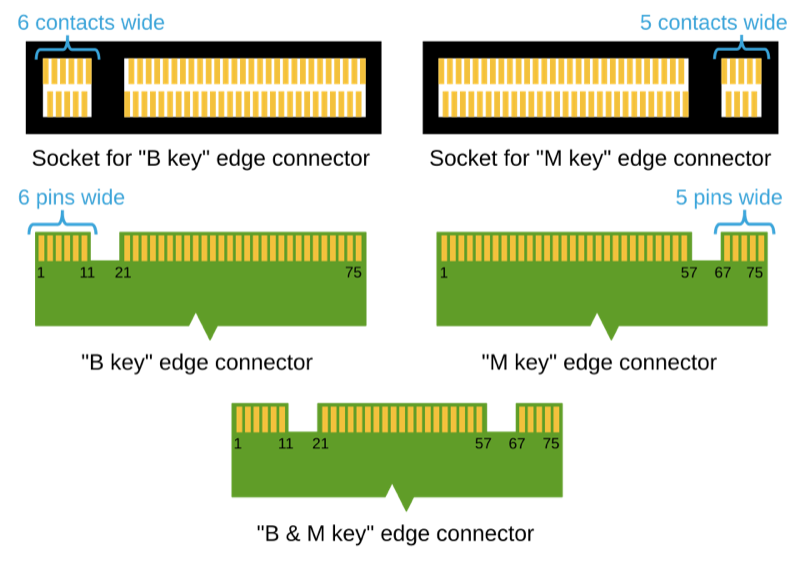
"Type" adalah bentuk colokan. Kecepatan ditentukan oleh versi USB. Satu bentuk bisa punya banyak kecepatan, terutama USB-C.
| Nama di kotak | Nama lama | Kecepatan | Contoh nyata |
|---|---|---|---|
| USB 2.0 (Hi-Speed) | – | 480 Mbps (±40 MB/s) | Mouse, keyboard, printer, flashdisk murah |
| USB 5Gbps | USB 3.0 = 3.1 Gen 1 = 3.2 Gen 1 | 5 Gbps | Port biru di PC, flashdisk modern |
| USB 10Gbps | USB 3.1 Gen 2 = 3.2 Gen 2 | 10 Gbps | SSD eksternal |
| USB 20Gbps | USB 3.2 Gen 2x2 | 20 Gbps | SSD eksternal cepat (USB-C saja) |
| USB 40Gbps / 80Gbps | USB4 / USB4 v2 | 40–80 Gbps | Laptop baru, dock monitor |
| Thunderbolt 4 / 5 | – | 40 / 80 Gbps | Laptop bisnis dan Mac, logo petir ⚡ |
Nama USB memang membingungkan karena berkali-kali diganti. Karena itu USB-IF sekarang menyarankan menulis kecepatannya langsung, misalnya "USB 10Gbps". Warna biru di port USB-A biasanya menandakan USB 5Gbps atau lebih, tapi ini kebiasaan produsen, bukan aturan wajib.

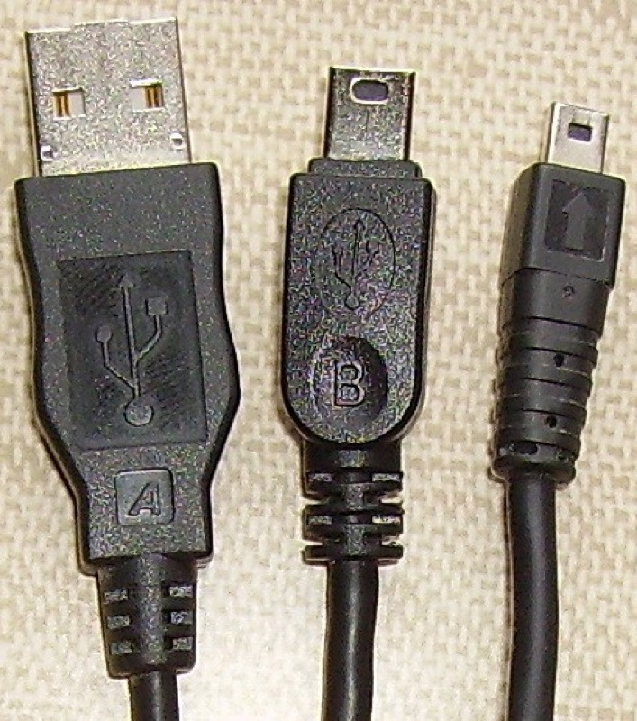


Port monitor tidak hanya HDMI. Proyektor kantor lama masih memakai VGA, monitor gaming lebih cocok memakai DisplayPort, dan laptop baru sering cukup USB-C.
| Port | Sinyal | Maksimal umum | Masih dipakai di |
|---|---|---|---|
| HDMI 2.0 | Digital + audio | 4K 60 Hz | Monitor kantor, TV, proyektor baru |
| HDMI 2.1 | Digital + audio | 4K 120 Hz · 48 Gbps | Monitor gaming, TV baru, konsol |
| DisplayPort 1.4 | Digital + audio | 4K 120 Hz (dengan DSC lebih) | Monitor PC, kartu grafis |
| DisplayPort 2.1 | Digital + audio | sampai 80 Gbps | Kartu grafis dan monitor terbaru |
| USB-C (DP Alt Mode) | DisplayPort lewat USB-C | tergantung port | Laptop, monitor dengan USB-C |
| DVI | Digital (DVI-I juga analog) | ±2560×1600 (dual link) | Monitor dan PC kantor lama |
| VGA | Analog, tanpa audio | buram di atas 1080p | Proyektor dan PC lama, server |


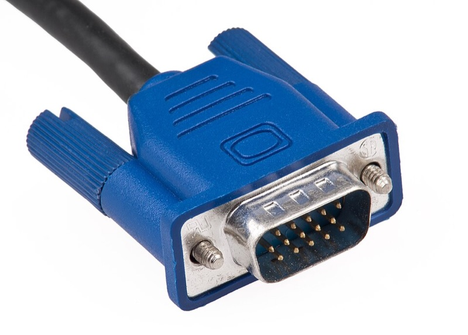
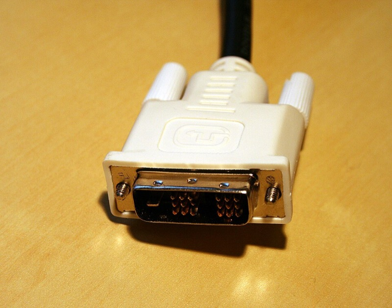

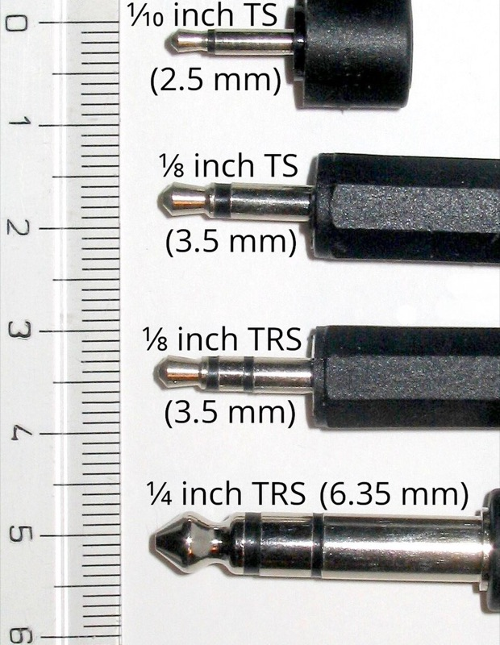
Semua kabel ini keluar dari PSU atau motherboard. Bentuknya sengaja dibuat berbeda supaya tidak tertukar. Kalau harus dipaksa, hampir pasti salah tempat.
| Konektor | Dari → ke | Pin | Daya maksimal |
|---|---|---|---|
| ATX 24-pin | PSU → motherboard | 24 (20+4) | Daya utama motherboard |
| EPS 8-pin | PSU → CPU (pojok kiri atas board) | 8 (4+4) | ±300 W per konektor |
| PCIe 6+2-pin | PSU → kartu grafis | 6 atau 8 | 75 W / 150 W |
| 12V-2x6 (12VHPWR) | PSU → kartu grafis baru | 12 + 4 sense | 600 W |
| SATA power | PSU → HDD/SSD SATA | 15 | 3,3 V / 5 V / 12 V |
| Molex 4-pin | PSU → kipas, perangkat lama | 4 | Model lama |
| SATA data | Motherboard → HDD/SSD SATA | 7 | 6 Gbps |
EPS 8-pin (CPU) dan PCIe 8-pin (GPU) bentuknya mirip tapi susunan kabelnya berbeda. Kebanyakan PSU memberi label "CPU" dan "PCIe" di kabelnya. Jangan tertukar, karena colokan PCIe yang dipaksa ke soket CPU bisa merusak.
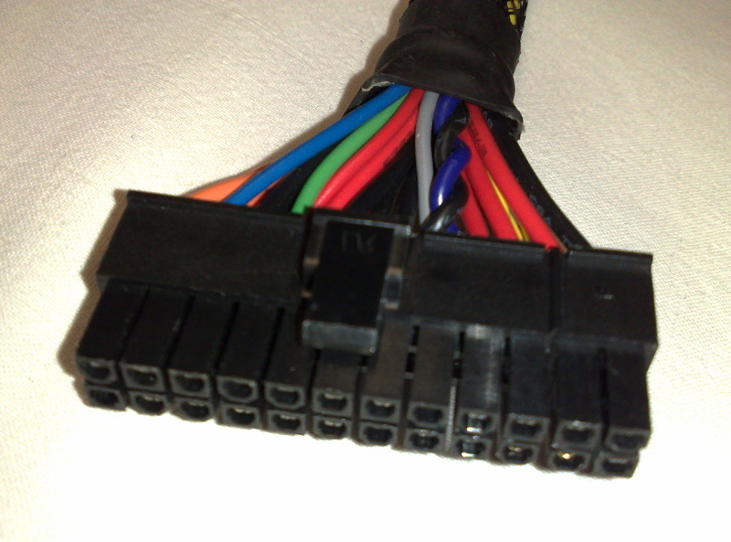
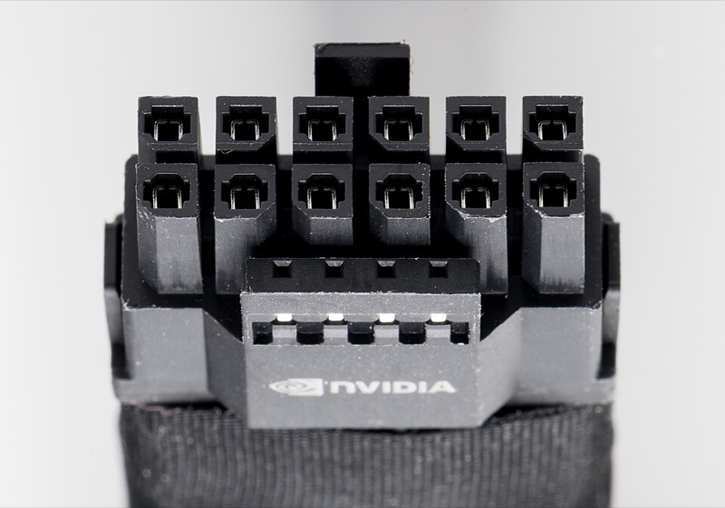
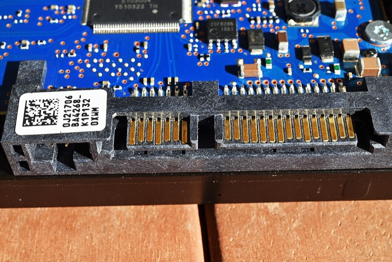
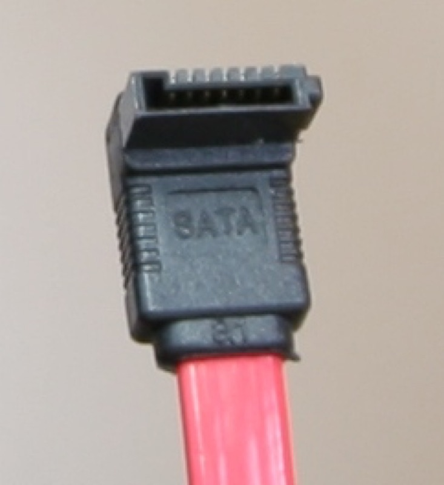
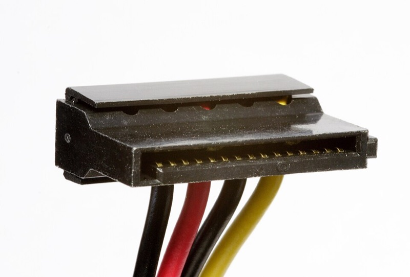
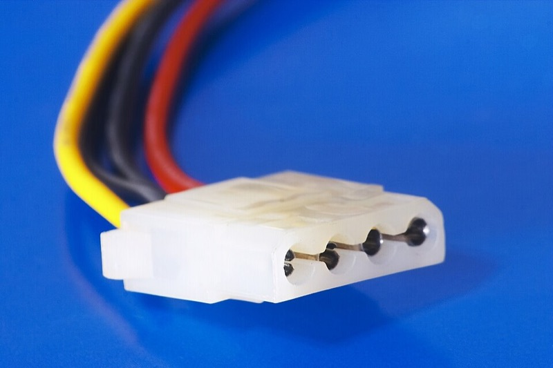
RAM laptop dan RAM PC tidak bisa ditukar. Jumlah pinnya berbeda.